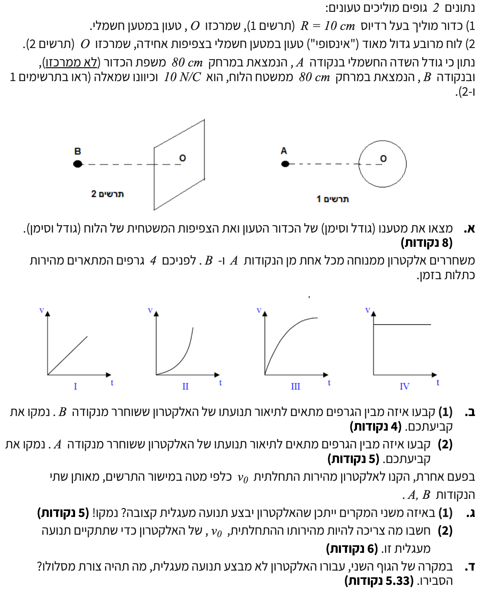

פתרון מלא: מתכונת באלקטרוסטטיקה
פיזיקה 5 יח"ל | שדות, כוחות ותנועת מטענים
פתרון מודרך ומתקדם המציג ניתוח כוחות וגרפים בפירוט צעד-אחר-צעד
עודכן:
--- --:--:--
מבט כללי על השאלה
השאלה מעמתת בין שני מקורות שונים של שדה חשמלי: שדה רדיאלי משתנה של כדור מוליך ושדה אחיד של לוח אינסופי.
נבחן כיצד משפיע סוג השדה על כוחות, תאוצות, ועל אופי התנועה של חלקיק טעון (אלקטרון) המשוחרר ממנוחה או נזרק במהירות התחלתית בכיוונים שונים.
זהו תרגול מצוין להבנת הקשר שבין שדה חשמלי לבין קינמטיקה וחוקי ניוטון.

[תמונת השאלה המקורית]
לא נמצאה תמונה בשם question-image.png באותה תיקייה.
מה נתון:
- רדיוס הכדור המוליך: \( R = 10 \text{ cm} = 0.1 \text{ m} \)
- מרחק הנקודות מהשפה: \( d = 80 \text{ cm} = 0.8 \text{ m} \)
- גודל השדה החשמלי: \( E_A = E_B = 10 \text{ N/C} \)
- כיוון השדה: שמאלה בשתי הנקודות.
- קבועים: \( k = 9 \cdot 10^9 \frac{\text{N}\cdot\text{m}^2}{\text{C}^2} \), \( \epsilon_0 = 8.85 \cdot 10^{-12} \frac{\text{C}^2}{\text{N}\cdot\text{m}^2} \)
מה מחפשים:
את גודלו וסימנו של מטען הכדור \( Q \), ואת גודלה וסימנה של צפיפות המטען של הלוח \( \sigma \).
נוסחאות מהדף:
\( E = k \frac{q}{r^2} \)
\( E = \frac{\sigma}{2\epsilon_0} \)
פתרון צעד-אחר-צעד:
שלב 1: עבור הכדור המוליך
נקודה A נמצאת משמאל לכדור, וכיוון השדה בה הוא שמאלה. השדה מצביע הלאה מן הכדור, ולכן זהו מטען חיובי.
נחשב את המרחק ממרכז הכדור אל נקודה A (נוסחת השדה מתייחסת למרכז המטען):
\[ r_A = R + d = 0.1 + 0.8 = 0.9 \text{ m} \]
נציב בנוסחת השדה ונחלץ את המטען \( Q \):
\[ E_A = k \frac{Q}{r_A^2} \implies 10 = 9 \cdot 10^9 \cdot \frac{Q}{(0.9)^2} \]
\[ Q = \frac{10 \cdot 0.81}{9 \cdot 10^9} = 0.9 \cdot 10^{-9} \text{ C} \]
שלב 2: עבור הלוח האינסופי
נקודה B נמצאת משמאל ללוח, וכיוון השדה בה שמאלה (הרחק מהלוח). לכן גם הלוח טעון במטען חיובי.
נציב בנוסחת השדה של לוח אינסופי ונחלץ את צפיפות המטען \( \sigma \):
\[ E_B = \frac{\sigma}{2\epsilon_0} \implies 10 = \frac{\sigma}{2 \cdot 8.85 \cdot 10^{-12}} \]
\[ \sigma = 10 \cdot 2 \cdot 8.85 \cdot 10^{-12} = 1.77 \cdot 10^{-10} \text{ C/m}^2 \]
מסקנה: מטען הכדור הוא \( Q = +0.9 \text{ nC} \), וצפיפות המטען של הלוח היא \( \sigma = +1.77 \cdot 10^{-10} \frac{\text{C}}{\text{m}^2} \).
טיפ מורה:
קראו את השאלה בדקדקנות ובסבלנות! תלמידים רבים נוטים להציב את הנתון \( d \) כמייצג את המרחק \( r \) במשוואת השדה של מוליך כדורי.
שימו לב להבדל העקרוני: שדה הכדור תלוי במרחק ממרכזו ולכן הוספנו את הרדיוס \( R \) למרחק \( d \). שדה של לוח אינסופי הוא אחיד ואינו תלוי כלל במרחק, ולכן הנתון \( d = 80 \text{ cm} \) אינו נכנס לחישוב של \( \sigma \).
מה נתון:
- אלקטרון משוחרר ממנוחה (\( v_0 = 0 \)) מנקודה B.
- מטען האלקטרון הוא שלילי.
- השדה החשמלי באזור הלוח הוא אחיד וקבוע.
מה מחפשים:
לקבוע איזה מבין 4 הגרפים מתאר נכונה את גודל מהירות האלקטרון כתלות בזמן, ולנמק.
נוסחאות מהדף:
\( \vec{F} = q\vec{E} \)
\( \Sigma\vec{F} = m\vec{a} \)
\( v = v_0 + at \)
פתרון צעד-אחר-צעד:
נצייר תרשים כוחות לאלקטרון המשוחרר ליד הלוח:
השדה החשמלי (\( E \)) שנוצר על ידי הלוח האינסופי הוא שדה אחיד, כלומר קבוע בגודלו ובכיוונו בכל נקודה במרחב. מכיוון שמטען האלקטרון (\( q \)) קבוע, הכוח החשמלי הפועל עליו מחושב לפי \( F_e = |q|E \) וגם הוא קבוע בגודלו (ופועל ימינה, נגד כיוון השדה).
על פי החוק השני של ניוטון, הכוח השקול קבוע ולכן מייצר תאוצה קבועה:
\[ a = \frac{|q|E}{m} = \text{const} \]
תנועה בתאוצה קבועה שמתחילה ממנוחה מתוארת בקינמטיקה על ידי המשוואה הליניארית \( v = at \). בגרף של מהירות זמן (v-t), השיפוע מייצג את התאוצה. שיפוע קבוע מתבטא כקו ישר עולה.
מסקנה: הגרף המתאים הוא גרף I.
טיפ מורה:
מכיוון שהאלקטרון טעון במטען שלילי, הכוח החשמלי יפעל בכיוון מנוגד לשדה החשמלי. השדה שמאלה, לכן הכוח ימינה - האלקטרון נמשך אל הלוח החיובי. כוח קבוע \(\leftarrow\) תאוצה קבועה \(\leftarrow\) שיפוע קבוע בגרף V-t.
מה נתון:
- אלקטרון משוחרר ממנוחה (\( v_0 = 0 \)) מנקודה A.
- השדה סביב הכדור איננו אחיד ותלוי במרחק: \( E = \frac{kQ}{r^2} \).
מה מחפשים:
לקבוע איזה מבין 4 הגרפים מתאר נכונה את מהירות האלקטרון כתלות בזמן, ולנמק.
נוסחאות מהדף:
\( E = k \frac{Q}{r^2} \)
\( \Sigma\vec{F} = m\vec{a} \)
\( a = \frac{\Delta v}{\Delta t} \)
חישוב והסבר:
נצייר תרשים חשיבה על האלקטרון באזור הכדור:
כאשר האלקטרון משוחרר מנקודה A, הוא נמשך ימינה אל עבר הכדור החיובי. משמעות הדבר היא שהמרחק \( r \) בין האלקטרון למרכז הכדור הולך וקטן.
ככל שהמרחק \( r \) קטן, עוצמת השדה החשמלי הולכת וגדלה בהתאם למשוואה \( E = \frac{kQ}{r^2} \).
על פי החוק השני של ניוטון:
\[ a = \frac{F_e}{m} = \frac{|q|E}{m} = \frac{|q|kQ}{m \cdot r^2} \]
התאוצה של האלקטרון הולכת וגדלה עם הזמן. שיפוע המשיק לגרף בכל נקודה שווה לתאוצה הרגעית, ולכן שיפוע הגרף חייב להיות הולך וגדל. צורה של עקומה המתחילה ממנוחה וששיפועה עולה בהתמדה היא הגרף השני.
מסקנה: הגרף המתאים הוא גרף II.
טיפ מורה:
זכרו היטב את הקשר הגרפי והפיזיקלי: בגרף מהירות-זמן, השיפוע מייצג ישירות את גודל התאוצה, והתאוצה נמצאת תמיד ביחס ישר לכוח השקול הפועל על הגוף (\( \Sigma F = ma \)). ככל שהאלקטרון קרב אל הגוף הטעון חיובית, כוח המשיכה החשמלי ביניהם הולך וגדל. כתוצאה מכך – תאוצת האלקטרון עולה בהתמדה, ושיפוע הגרף הופך תלול יותר ויותר ככל שחולף הזמן!
מצב זה שונה מנפילה חופשית על פני כדור הארץ בה אנו מזניחים את השינוי ב-g. כאן, המרחקים הם קטנים משמעותית ביחס לשינויים בשדה, ולכן כוח המשיכה מתחזק בצורה בולטת ככל שהאלקטרון מתקרב למקור!
מה נתון:
מקנים לאלקטרון מהירות התחלתית \( v_0 \) כלפי מטה במישור הדף בשתי הנקודות A ו-B.
מה מחפשים:
באיזה משני המקרים (לוח או כדור) ייתכן שהאלקטרון יבצע תנועה מעגלית קצובה.
הסבר והנמקה:
תנאי הכרחי לתנועה מעגלית קצובה: חייב לפעול כוח שקול שכיוונו תמיד למרכז מסלול מעגלי קבוע, וניצב בכל רגע לווקטור המהירות.
במקרה של הלוח (נקודה B): השדה הוא אחיד ואופקי. הכוח החשמלי הפועל על האלקטרון הוא תמיד בכיוון אופקי ללא תלות במיקומו. כוח ששומר תמיד על כיוון קבוע אינו יכול לשמש ככוח רדיאלי (צנטריפטלי) המכוון תמיד אל מרכז מעגל משותף. תנועה מעגלית סביב הלוח אינה אפשרית.
במקרה של הכדור (נקודה A): קווי השדה הם רדיאליים ויוצאים ממרכז הכדור \( O \). הכוח החשמלי מצביע תמיד אל מרכז הכדור \( O \). כאשר נותנים לאלקטרון מהירות \( v_0 \) במשיק, אם המהירות היא בדיוק בגודל המתאים (\( F_e = m\frac{v^2}{r} \)), האלקטרון יבצע תנועה מעגלית קצובה סביב המרכז.
מסקנה: תנועה מעגלית תיתכן במקרה של הכדור (נקודה A).
טיפ מורה:
זכרו שכוח צנטריפטלי הוא לא "כוח חדש", אלא תפקיד שממלא הכוח החשמלי במקרה זה. שדה רדיאלי של כדור מתאים בדיוק לדרישה של כוח המכוון אל מרכז יחיד!
מה נתון:
- מרחק ממרכז הכדור: \( r_A = 0.9 \text{ m} \)
- גודל השדה החשמלי: \( E_A = 10 \text{ N/C} \)
- מטען האלקטרון (בערך מוחלט): \( e = 1.6 \cdot 10^{-19} \text{ C} \)
- מסת האלקטרון: \( m_e = 9.11 \cdot 10^{-31} \text{ kg} \)
מה מחפשים:
לחשב את גודל המהירות \( v_0 \) הנדרשת כדי שהאלקטרון יבצע תנועה מעגלית ברדיוס זה.
נוסחאות מהדף:
\( \Sigma F_R = m a_R \)
\( a_R = \frac{v^2}{r} \)
\( F_e = |q|E \)
חישוב:
הכוח היחיד שפועל על האלקטרון בציר הרדיאלי הוא הכוח החשמלי \( F_e \). נרכיב את משוואת הכוחות בציר הרדיאלי (החוק השני של ניוטון בתנועה מעגלית):
\[ F_e = m_e a_R \implies |q_e|E_A = m_e \frac{v_0^2}{r_A} \]
נבודד את המהירות הריבועית \( v_0^2 \):
\[ v_0^2 = \frac{|q_e| \cdot E_A \cdot r_A}{m_e} \]
נציב את כל הנתונים המספריים ונוציא שורש:
\[ v_0^2 = \frac{(1.6 \cdot 10^{-19}) \cdot 10 \cdot 0.9}{9.11 \cdot 10^{-31}} \approx 1.58 \cdot 10^{12} \]
\[ v_0 = \sqrt{1.58 \cdot 10^{12}} = 1.257 \cdot 10^6 \text{ m/s} \]
מסקנה: גודל המהירות הנדרשת הוא \( v_0 = 1.26 \cdot 10^6 \text{ m/s} \).
טיפ מורה:
כאשר אנו מחשבים מהירויות של חלקיקים תת-אטומיים (כמו אלקטרונים), אין צורך להיבהל כשאנו מקבלים תוצאות גבוהות מסדר גודל של \( 10^6 \text{ m/s} \). זהו בהחלט טווח הגיוני ורגיל! עם זאת, יש לזכור תמיד סף עליון קריטי: אף חלקיק אינו יכול להגיע למהירות האור בריק או לעבור אותה, כלומר מהירותו חייבת להיות קטנה מ- \( c = 3 \cdot 10^8 \text{ m/s} \). אם החישוב שלכם מניב תוצאה שגדולה ממהירות האור, זוהי נורת אזהרה ברורה המעידה על טעות (לרוב חלוקה שגויה, שכחת העלאה בריבוע או אי-הוצאת שורש), ומומלץ לחזור ולבדוק היטב את הפתרון.
מה נתון:
- אלקטרון משוחרר ליד לוח עם מהירות התחלתית \( v_0 \) מטה (ציר y).
- פועל עליו כוח חשמלי כתוצאה משדה אחיד, הכוח הוא ימינה בלבד (ציר x).
מה מחפשים:
לקבוע ולהסביר מה תהיה צורת המסלול שיבצע האלקטרון במקרה זה.
נוסחאות ועקרונות בשימוש:
עקרון אי תלות התנועות בצירים
\( v_x = at \)
\( y = v_0 t \)
פתרון והסבר:
נפרק את תנועת האלקטרון לשני צירים:
- ציר אופקי (x): פועל עליו כוח חשמלי אופקי קבוע. לכן יש לאלקטרון תאוצה קבועה, והמהירות שלו ימינה הולכת וגדלה ליניארית עם הזמן.
- ציר אנכי (y): לא פועל שום כוח בכיוון האנכי (כבידה נזנחת). לכן התאוצה בציר y היא אפס והאלקטרון יתמיד בתנועתו במהירות קבועה מטה.
שילוב של תנועה קצובה בציר אחד ותנועה שוות-תאוצה בציר השני יוצר מסלול עקום שהפונקציה שלו היא פרבולה (בדומה לזריקה אופקית בשדה הכבידה).
מסקנה: צורת המסלול שיבצע האלקטרון תהיה פרבולה.
טיפ מורה:
תופעה זו היא בסיס לפעולה של מכשירים רבים כמו שפופרת קרן קתודית (CRT), שבו קרן אלקטרונים עוברת בין לוחות טעונים, והמסלול הפרבולי גורם להסטה של הקרן על המסך!